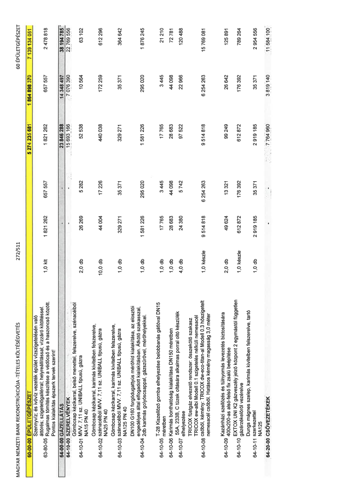

| Tétel | Menny. | Egys. | Anyag e.ár (net HUF) | Díj e.ár (net HUF) | Anyag összesen (net HUF) | Díj összesen (net HUF) | Anyag+Díj összesen (net HUF) |
|---|---|---|---|---|---|---|---|
| 60-00-00 ÉPÜLETGÉPÉSZET | NaN | NaN | 0 | 0 | 5 274 235 681 | 1 864 898 370 | 7 139 134 051 |
| Szennyvíz; és ivóvíz vezeték épület vízszigetelésén való áttörés; szigetelőgallérral; helyreállítással; vízzáró kitöltéssel. Rugalmas tömítés készítése a védőcső és a haszoncső között. Pontos kialakítás épszerk tervek szerint! | 0 | 0 | 0 | 0 | 0 | 0 | 0 |
| 63-80-05 | 1,0 | klt | 1 821 262 | 657 557 | 1 821 262 | 657 557 | 2 478 818 |
| 64-00-00 GÁZELLÁTÁS | NaN | NaN | 0 | 0 | 23 846 288 | 14 348 497 | 38 194 785 |
| 64-10-00 SZERELVÉNYEK | NaN | NaN | 0 | 0 | 15 693 166 | 7 076 390 | 22 769 556 |
| Gömbcsap kézikarral, belső menettel, felszerelve, szénacélból MVV. 7.11 sz. UNIBALL típusú, gázra | 0 | 0 | 0 | 0 | 0 | 0 | 0 |
| 64-10-01 NA15 PN 40 | 2,0 | db | 26 269 | 5 282 | 52 538 | 10 564 | 63 102 |
| Gömbcsap kézikarral, karimás kivitelben felszerelve, szénacélból MVV. 7.11 sz. UNIBALL típusú, gázra | 0 | 0 | 0 | 0 | 0 | 0 | 0 |
| 64-10-02 NA25 PN 40 | 10,0 | db | 44 004 | 17 226 | 440 038 | 172 259 | 612 296 |
| Gömbcsap kézikarral, karimás kivitelben felszerelve, szénacélból MVV. 7.11 sz. UNIBALL típusú, gázra | 0 | 0 | 0 | 0 | 0 | 0 | 0 |
| 64-10-03 NA125 PN 40 | 1,0 | db | 329 271 | 35 371 | 329 271 | 35 371 | 364 642 |
| DN100 G160 forgódugattyús mérőhíd kialakítása, az elosztói engedélyes által elfogadott kialakításban. Átkötő szakasszal, 2db karimás golyóscsappal, gázszűrővel, mérőhelyekkel. | 0 | 0 | 0 | 0 | 0 | 0 | 0 |
| 64-10-04 | 1,0 | db | 1 581 226 | 295 020 | 1 581 226 | 295 020 | 1 876 245 |
| T-28 Kiszellőző gomba elhelyezése belobbanás gátlóval DN15 méretben | 0 | 0 | 0 | 0 | 0 | 0 | 0 |
| 64-10-05 | 1,0 | db | 17 765 | 3 445 | 17 765 | 3 445 | 21 210 |
| Karimás bonthatóság kialakítása DN150 méretben | 0 | 0 | 0 | 0 | 0 | 0 | 0 |
| 64-10-06 | 1,0 | db | 28 683 | 44 098 | 28 683 | 44 098 | 72 781 |
| 55A, 233B, C tüzek oltására alkalmas porral oltó készülék elhelyezése | 0 | 0 | 0 | 0 | 0 | 0 | 0 |
| 64-10-07 | 4,0 | db | 24 380 | 5 742 | 97 522 | 22 966 | 120 488 |
| TRICOX füstgáz elvezető rendszer: összekötő szakasz TRICOX ew-albi Modell 0.1 szigetelés nélküli nemesacél csőből, kémény: TRICOX dw-eco-titan-al Modell 0.3 hőszigetelt nemesacél csőből. Hatásos kémény magasság 3,0 méter | 0 | 0 | 0 | 0 | 0 | 0 | 0 |
| 64-10-08 | 1,0 | készle | 9 514 818 | 6 254 263 | 9 514 818 | 6 254 263 | 15 769 081 |
| Kazánházi szellőzés és túlnyomás levezetés biztosítására 400x200-as alsó-felső fix zsalú beépítése | 0 | 0 | 0 | 0 | 0 | 0 | 0 |
| 64-10-09 | 2,0 | db | 49 624 | 13 321 | 99 249 | 26 642 | 125 891 |
| EXTOX UNI K2 gázveszély jelző központ 2 egymástól független gázérzékelőről vezérelve | 0 | 0 | 0 | 0 | 0 | 0 | 0 |
| 64-10-10 | 1,0 | készle | 612 872 | 176 392 | 612 872 | 176 392 | 789 264 |
| Dungs mágnes szelep, karimás kivitelben felszerelve, tartó szerkezettel | 0 | 0 | 0 | 0 | 0 | 0 | 0 |
| 64-10-11 NA125 | 1,0 | db | 2 919 185 | 35 371 | 2 919 185 | 35 371 | 2 954 556 |
| 64-20-00 CSŐVEZETÉKEK | NaN | NaN | 0 | 0 | 7 764 960 | 3 819 140 | 11 584 100 |
